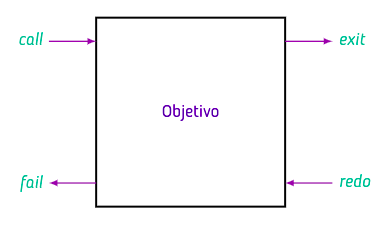
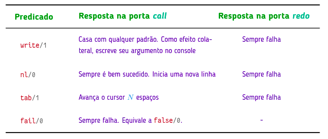

Prolog
1. Instalação
1.1 Download
# Adiciona o repositório oficial sudo add-apt-repository ppa:swi-prolog/stable # Atualiza a lista de pacotes sudo apt update # Instala o SWI-Prolog sudo apt install swi-prolog
1.2 Editar Arquivo
Exemplo 1:
# Cria um arquivo vazio chamado con.pl
touch con.pl
# Editar Arquivo
gedit con.pl &
#Exemplo
% Tabela verdade do AND (and/2)
and(true, true).
# Dar control + s
1.3 Rodar o Prolog
# Abrir o prolog
swipl -s con.pl
# Testar
?- and(true, true).
?- true
?- and(true, false).
?- false
# Sair
?- halt.
1.4 Consultar e Reconsultar.
Para consultar ou reconsultar um arquivo podemos usar:
// carrega um arquivo
?- consult('con.pl').
//recarregar o arquivo caso você tenha feito alterações
?- reconsult('con.pl').
2. Cláusulas
uma cláusula é a menor unidade de um programa. Ela é uma instrução que termina obrigatoriamente com um ponto finas, podendo ser um fato ou uma regra.
Exemplo
% Fato
cidade('Brasília', df).
% Regra
unb(X) :- fcte(X) ; darcy(X).
% Esse exemplo abaixo possui 6 cláusulas e 3 predicados
pai(adao, cain).
pai(adao, abel).
homem(adao).
homem(cain).
homem(abel).
filho(X, Y) :- pai(Y, X).
2.1 Sintaxe
- Todo fato deve terminar com um ponto.
- Deve se declarar somente os fatos verdadeiros, todo o resto é considerado falso.
- Predicados devem começar com letra minúscula.
- Átomos devem começar com letra minúsculas. No caso de estarem delimitadas por áspas simples podem ter maiúsculas e espaços.
- Variáveis devem iniciar ou letra maiúscula ou underline.
2.2 Preposições de Controle
Separam os argumentos
| Símbolo | Nome Técnico | Aridade | Descrição | Exemplo Prático |
|---|---|---|---|---|
, |
Conjunção | /2 |
Operador E. O Prolog só avança se o termo da esquerda e o da direita tiverem sucesso. | ?- cidade(X, mt), capital(X). |
; |
Disjunção | /2 |
Operador OU. Tenta o sucesso no primeiro termo; se falhar, faz o Backtracking para o segundo. | ?- fcte(ana) ; darcy(ana). |
\+ |
Negação por Falha | /1 |
Operador NÃO. Tem sucesso apenas se o Prolog não conseguir provar o que está dentro. | ?- \+ capital('Gama'). |
true |
Sucesso | /0 |
Predicado que sempre tem sucesso. Útil para "forçar" uma regra a ser verdadeira. | ?- fcte(ana), true. |
fail |
Falha | /0 |
Predicado que sempre falha. Força o Prolog a interromper o caminho atual ou buscar alternativas. | ?- cidade(X, df), fail. |
2.3 Fatos
Um fato é a implementação prática de uma preposição lógica afirmativa em prolog.
Ele é formado por um predicado e argumentos/termos. O formato pred/N indica a quantidade de termos que o fato possui. Exemplo:
pred(arg1, arg2, ... argN). pred/N
and(true, true). and/2
or(true, false) or/2
or(false, true) or/2
2.3.1 Preposições Compostas:
Uma preposição composta é a união de duas preposições simples através de conectivos lógicos. Em prolog, temos duas opções para representar uma preposição composta:
Primeira: Criar fatos no banco de dados e passar um fato como argumento de outro fato. Exemplo: preposição (F ∨ V ) ∧ V
% Banco de Dados
and(true, true).
or(true, false).
or(false, true).
% Terminal
?- and(or(true, false), true).
Segunda: Não utilizar banco de dados e usar predicados de controle como operadores.
% Terminal
?- (false ; true), true.
true.
2.4 Termos
São os argumentos de um fato, podem ser:
Átomos: Nomes de propósito geral.
Números: Inteiros ou flutuantes (termos primitivos).
Variáveis: Substituem argumentos no objetivo.
2.5 Regras
Regra é um tipo de cláusula que representam uma consulta armazenada. Sua sintaxe se da por:
- Head: é um predicado
- Pescoço: neck-symbol (:-), lido como "se".
- Body: composto por uma consulta.
Exemplo 1:
cidade('Brasília', df).
cidade('Gama', df).
cidade('Cuiabá', mt).
cidade('Barra dos Bugres', mt).
cidade('Tangará da Serra', mt).
cidade('Belo Horizonte', mg).
cidade('Governador Valadares', mg).
capital('Brasília').
capital('Cuiabá').
capital('Belo Horizonte').
regiao(centro_oeste, df).
regiao(centro_oeste, mt).
regiao(sudeste, mg).
capitais(X, Y) :- regiao(Y, Z), cidade(X, Z), capital(X).
% Consultas possiveis
?- capitais(X, centro_oeste).
X = 'Brasília' ;
X = 'Cuiabá' ;
Exemplo 2:
% Banco de Dados
fcte(ana).
fcte(paulo).
fcte(pedro).
darcy(joao).
darcy(carlos).
iesb(carla).
iesb(mateus).
unb(X) :- fcte(X) ; darcy(X).
% Consultas no terminal
?- unb(carla).
false.
?- unb(ana).
true .
?- unb(joao).
true.
3. Consultas
Uma vez que a base de dados do interpretador foi alimentado com fatos, podemos através do console realizar consultas(queries) sobre os fatos.
Unificação: Processo onde ocorre um casamento de padrões (objetivos/goals) na base de dados. Se algum fato atingir o objetivo o interpretador responde com true, caso contrário com false.
3.1 Consultas simples
Nele a unificação percore o banco de dados e é bem sucedida se o obejtivo e a base de dados: - Possuirem mesmo predicado. - Possuirem mesma aridade. - Possuirem mesmos argumentos.
Exemplo 1:
% Banco de Dados
f(1, 2).
f(1, 3).
f(2, 3).
g(1).
g(2).
% Consultas no terminal
?- f(1, 2).
true.
?- f(2, 1).
false.
?- f(1).
false.
?- g(1, 2).
false
Exemplo 2:
% Banco de Dados
fcte(ana).
fcte(paulo).
fcte(pedro).
darcy(joao).
darcy(carlos).
% Consultas no terminal
?- fcte(ana).
true.
?- fcte(joao).
false.
?- darcy(joao).
true.
3.2 Consultas com Variáveis
É utilizado uma variável no lugar de um argumento no objetivo. Nele a unificação percorre o banco de dados e busca a claúsula que bate positivamente com qualquer termo que: - Possua mesmo predicado. - Possua mesma aridade. - Possua mesmos argumentos.
Quando você digita fcte(X)., você está dizendo: "Prolog, existe alguém que satisfaça fcte? Quem?" Se sim, irá retornar os valores batidos, podendo navegar utlizando ponto-e-vírgula. Caso contrário, retornará ERROR.
Quando você digita fcte(_)., você está dizendo: "Prolog, existe qualquer fato no banco de dados que corresponda a fcte?" Após isso, irá retornar true, caso existir, ou false, caso não existir.
Exemplo 1:
% Banco de Dados
fcte(ana).
fcte(paulo).
fcte(pedro).
:- dynamic fgv/1.
fgv(pedro).
% Consultas no terminal
?- fcte(X).
X = ana ; X = paulo ; X = pedro.
?- fcte(_).
true .
?- retract(fgv(pedro)).
true.
?- fgv(_).
false.
Exemplo 2:
% Banco de Dados
algoritmo(grafos, kruskall).
algoritmo(grafos, bellman-ford).
algoritmo(strings, kmp).
algoritmo(strings, z-function).
algoritmo(strings, lcs).
algoritmo(gulosos, kruskall).
% Consultas no terminal
?- algoritmo(strings, X).
X = kmp ; X = z-function ; X = lcs.
?- algoritmo(Area, kruskall).
Area = grafos ; Area = gulosos.
?- algoritmo(X,Y).
X = grafos, Y = kruskall ;
X = grafos, Y = bellman-ford ;
X = strings, Y = kmp ;
X = strings, Y = z-function ;
X = strings, Y = lcs ;
X = gulosos, Y = kruskall.
?- algoritmo(X,_).
X = grafos ; X = grafos ;
X = strings ; X = strings ; X = strings ;
X = gulosos.
?- algoritmo(_,_).
true .
3.3 Consultas Compostas
Nele a unificação também percore o banco de dados e também é bem sucedida se o obejtivo e a base de dados casarem, porém possui mais de uma claúsula e deve obedecer o predicado de controle fornecido.
Exemplo:
cidade('Brasília', df).
cidade('Gama', df).
cidade('Cuiabá', mt).
cidade('Barra dos Bugres', mt).
cidade('Tangará da Serra', mt).
cidade('Belo Horizonte', mg).
cidade('Governador Valadares', mg).
cidade('Santo Ângelo', rs).
capital('Brasília').
capital('Cuiabá').
capital('Belo Horizonte').
regiao(centro_oeste, df).
regiao(centro_oeste, mt).
regiao(sudeste, mg).
% Exemplos de consultas:
?- cidade(X, mt), capital(X).
X = 'Cuiabá' ;
?- cidade(X, _), capital(X).
X = 'Brasília' ; X = 'Cuiabá' ; X = 'Belo Horizonte' ;
?- cidade(X, Y), regiao(centro_oeste, Y), capital(X).
X = 'Brasília', Y = df ;
X = 'Cuiabá', Y = mt ;
4. Manipulação da base de dados
Fatos dinâmicos são fatos que podem ser adicionados ou removidos através do terminal. Para isso devem ser marcados como dynamic. Assim, a manipulação de dados se da por meio dos comandos:
- asserta(pre(X)): adiciona uma cláusula X como primeira cláusula para seu predicado.
- assertz(pre(X)): igual a anterior, mas adiciona como última cláusula do predicado.
- retract(pre(X)): remove a cláusula X da base de dados.
Exemplo:
% Banco de Dados
:- dynamic produto/1.
produto(arroz).
produto(feijao).
% Consultas no terminal
?- assertz(produto(macarrao)).
true.
?- produto(X).
X = arroz ; X = feijao ; X = macarrao.
?- retract(produto(macarrao)).
true.
?- produto(X).
X = arroz ; X = feijao.
?- asserta(produto(macarrao)).
true.
?- produto(X).
X = macarrao ; X = arroz ; X = feijao.
5. Mecanismos
5.1 Unificação
Processo responsável pelas consultas onde ocorre um casamento de padrões (objetivos/goals) na base de dados. Se algum fato atingir o objetivo o interpretador responde com true, caso contrário com false. Para unificação ser bem sucedida, as três condições seguintes devem ser satisfeitas:
- O predicado presente no objetivo e na base de dados é o mesmo.
- Ambos tem mesma aridade.
- Todos os argumentos são os mesmos.
generalização recursão rastreamento
5.2 Generalizações
São utilizadas para definir geenralizações universais. Na lógica formal dizemos $\forall x, P(x)$ para significar "Para todo $x$, a propriedade $P$ é verdadeira". Já em prolog usamos uma variável livre.
% Banco de Dados
is_term(x).
% Consultas no terminal
?- is_term(1).
true.
?- is_term(abc).
true.
?- is_term(A).
true.
?- is_term(A, B).
Error
5.3 Backtracking (Box Model)
É a estratégia de busca em profundidade que o Prolog usa para navegar entre as cláusulas definidas no banco de dados. Se um caminho falha, ou se você pede outra solução com ponto-e-vírgula, o Prolog volta para a marcação do último ponto de escolha, desfaz as unificações e tenta próxima cláusula disponível.
Portas: um objetivo tem quatro portas que representam o fluxo de controle de sua avaliação.
- Call: Onde a avaliação começa.
- Exit: Se alguma cláusula unifica com o objetivo a avaliação termina, atando as avariáveis com os devidos elementos dos conjunto universais.
- Fail: Caso contraário, a avaliação falha.
- Redo: Se for bem sucedida e seguida de um ';', a avaliação é retomada (redo) a aprtir do ponto que parou, após desatar as variáveis.
No caso de consultas compostas ele encerra com sucesso apenas se sai pela porta exit do último predicado da consulta (mais à direita).

5.3.1 Modo Trace
Trace é o modo de debug/rastreamento do Prolog. Invez de nos mesmos colocar breakpoints (como em python), no Prolog ele próprio faz isso, porém com uma visualização baseado no Box Model. Para utilizar esse modo é necessário utilizar o comando trace. no terminal.
Exemplo:
% Banco de Dados
algoritmo(grafos, kruskall).
algoritmo(grafos, bellman_ford).
algoritmo(strings, kmp).
algoritmo(strings, z_function).
algoritmo(strings, lcs).
algoritmo(gulosos, kruskall).
listar_todos :-
algoritmo(Area, Nome),
format('Area: ~w | Algoritmo: ~w~n', [Area, Nome]),
fail.
listar_todos.
% Terminal
?- trace.
[trace] 86 ?- algoritmo(X, kruskall).
Call: (12) algoritmo(_2166, kruskall) ? creep
Exit: (12) algoritmo(grafos, kruskall) ? creep
X = grafos x
6. Predicados extra-lógicos

Exemplo:
% Banco de Dados
fcte(ana).
fcte(beto).
fcte(carlos).
darcy(diana).
darcy(esther).
ifb(fernando).
unb(X):- (fcte(X) ; darcy(X)).
unb_report :-
write('Estudantes da UnB: '), nl,
unb(X),
tab(2), write(X), nl,
write('proximo '), nl,
fail.
unb_report.
% Consultas no terminal
82 ?- unb_report.
Estudantes da UnB:
ana
proximo
beto
proximo
carlos
proximo
diana
proximo
esther
proximo
true.
% Banco de Dados
fcte(ana).
fcte(beto).
fcte(carlos).
darcy(diana).
darcy(esther).
ifb(fernando).
unb(X):- (fcte(X) ; darcy(X)).
unb_report :-
write('Estudantes da UnB: '), nl,
unb(X),
tab(2), write(X), nl,
write('proximo '), nl,
fail.
unb_report.
% Consultas no terminal
82 ?- unb_report.
Estudantes da UnB:
ana
proximo
beto
proximo
carlos
proximo
diana
proximo
esther
proximo
true.
7. Condicionais
Os condicionais em Prolog são habilitados através do predicado meta_predicate, onde N indica o número de parâmetros da função. Após ele é necessário declarar a função que irá ter a sintaxe (If -> Then). ou (If -> Then ; Else).
% Banco de Dados
soma(A, B, R) :- R is A + B.
sub(A, B, R) :- R is A - B.
mult(A, B, R) :- R is A * B.
:- meta_predicate executar(3).
executar(Op, N1, N2, N) :-
( call(Op, N1, N2, N) ->
write('certo')
;
write('erro')
).
% Terminal
?- executar(mult, 2, 4, 8).
certo
?- executar(sub, 10, 5, 100).
erro
8. Aritmética
Operadores são predicados que suportam, além da pré-fixada padrão, as notações infixada ou pós-fixada.
8.1 Operadores Customizados
Operadores são predicados que suportam, além da pré-fixada padrão, as notações infixada ou pós-fixada.
Há operadores padrões em prolog, porém podemos nos mesmos declarar operadores através da sintaxe:
:- op(Precedencia, Tipo, Nome).
Além disso, podemos citar todos os operados com
current_op(P, T, O).
e pagar um operador definindo a precedência dele como 0:
:- op(0, xfx, nome_do_operador).
8.1.1 Precedência:
Define a ordem de importância. Varia de 0 a 1200, quanto menor, maior a força.
- Exemplo: A multiplicação () tem precedência 400 e a soma (+) tem 500. Por isso, em 2 + 3 * 4, o Prolog resolve primeiro o .
8.1.2 Tipo
Usa de letras para representar o operador (f) e os argumentos (x e y).
1. Posição F representa onde o nome do predicado aparece. Exemplos:
Prefixado: fx, fy.
:- op(200, fx, nota).
?- nota 10.
Infixado: xfx, xfy, yfx.
:- op(200, xfx, ganha_de).
?- pedra ganha_de tesoura.
Pós-fixado: xf, yf.
:- op(200, xf, eh_bonito).
?- joao eh_bonito.
X é rígido, Y é flexível
2.1 Infixo Rígido (xfx): Não pode repetir o operador na mesma frase.
:- op(500, xfx, mae_de).
ana mae_de bia.
true.
ana mae_de bia mae_de caio.
ERRO
2.2 Infixo Associativo à Direita(xfy): O y está na direita, então ele permite que o operador se repita "empilhando" para a direita.
Exemplo: se temos um operador "e" que é xfy, então "sol e chuva e vento" é lido como e(sol, e(chuva, vento)).
2.2 Infixo Associativo à Direita(yfx): O y está na esquerda, então ele "empilha" para a esquerda.
Exemplo: Se temo um operador "+" que é yfx, então "1 + 2 + 3" é lido como: +(+(1, 2), 3).
8.1.2 Exemplos
Jokenpô
% Precedência 700 (comum para comparações)
% Tipo xfx (Infixado, não permite 'pedra ganha_de tesoura ganha_de papel')
:- op(700, xfx, ganha_de).
pedra ganha_de tesoura.
tesoura ganha_de papel.
papel ganha_de pedra.
venceu(Jogador1, Jogador2) :-
Escolha1 ganha_de Escolha2,
escreve_resultado(Jogador1, Escolha1, Jogador2, Escolha2).
8.2 Operadores de Igualdade e Unificação
| Operador | Nome | O que faz? | Exemplo |
|---|---|---|---|
= |
xfx | 700 | Unificação: Tenta tornar os termos iguais (vincula variáveis). |
== |
xfx | 700 | Identidade: Verdadeiro se os termos são exatamente iguais (sem vincular). |
=:= |
xfx | 700 | Igualdade Aritmética: Os valores numéricos são iguais? |
8.2.1 Operador de Unificação (=)
Ele tenta unificar os dois lados. É um processo de tentativa de tornar os dois termos idênticos, inclusive atribuindo valores a variáveis se necessário.
?- X = Y.
X = Y.
?- 2 + 2 = 2 + 2.
true.
?- 2 + 2 = 4.
false.
?- 2 + X = Y + a.
X = a,
Y = 2.
8.2.2 Operador de Identidade Literal (==)
Ele verifica a equivalência estrita. Ele não tenta mudar nada; ele apenas olha para os dois lados e pergunta: "Vocês são exatamente iguais agora?"
?- X == Y.
false.
?- 2 + 2 == 2 + 2.
true.
?- 2 + 2 == 4.
false.
?- 2 + X == Y + a.
false
8.2.3 Operador de Igualdade Aritmética (=:=)
É um operador de comparação. ELe não guarda os valores, apenas verifica se os dois cálculos chegam ao mesmo número.
?- X =:= Y.
false.
?- 2 + 2 =:= 2 + 2.
true.
?- 2 + 2 =:= 4.
true.
?- 2 + X =:= Y + a.
false
8.3 Operador de Atribuição Aritmética (is)
Ele se comporta como uma unificação do "=" com o "=:=" e possui dois usos:
- Com uma variável na esquerda: ele olha para o lado direito, resolve o cálaculo e colocar o resultado na variável da esquerda.
- Com números na esquerda: ele vai checar se o resultado do lado direito é igual o da esquerda.
?- X is 2 + 2.
X = 4.
?- 2 is 2.
true.
?- 4 is 2 + 2.
true.
?- 2 + 2 is 4.
false.
?- _ is 1 + 1.
true.
8.4 Operadores de Diferença e Não-Unificação
| Operador | Tipo | Precedência | Descrição |
|---|---|---|---|
\= |
xfx | 700 | Não Unificável: Verdadeiro se os termos não podem ser unificados. |
\== |
xfx | 700 | Não Idêntico: Verdadeiro se os termos não são estritamente iguais. |
=\=/2 |
xfx | 700 | Diferença Aritmética: Os valores numéricos são diferentes? |
8.5 Operadores de Comparação Numérica
| Operador | Tipo | Precedência | Descrição |
|---|---|---|---|
> |
xfx | 700 | Maior que |
< |
xfx | 700 | Menor que |
>= |
xfx | 700 | Maior ou igual que |
=< |
xfx | 700 | Menor ou igual que |
8.3 Funções Aritméticas
Ao invés de atar o resultado a uma variável, elas retornam o valor das suas operações. Para usá-los, é necessário:
- Carregar a biblioteca de aritmética:
se_module(library(arithmetic))
- Definifir a função aritmética:
:- arithmetic_function(nome_funcao/N).
- Definir a variávela a ser retornada:
:- arithmetic_function(nome_variavel/N).
Exemplo:
% Carrega a biblioteca de aritmética
:- use_module(library(arithmetic)).
% Declara os predicados como funções aritmética. Note que a aridade declarada
% é uma unidade menor do que a aridade usada na definição do predicado, e que a
% última variável conterá o valor de 'retorno'
:- arithmetic_function(number_of_lines/1).
:- arithmetic_function(juros_simples/3).
number_of_lines(N, Res) :- Res is 2^N.
juros_simples(M, J, T, Res) :-
Res is M * (1 + J * T).
% Agora é possível usar os predicados em conjunto com o operador is/2
?- X is 1 + number_of_lines(4).
X = 17.
?- X is juros_simples(1000, 0.05, 60).
X = 4000.0.
**combinadores